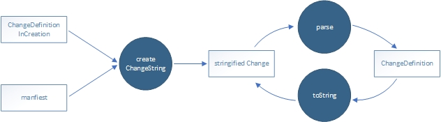

@ui5/flexibility-utils
flexibility API for change creation outside of a ui5 run time
This commit enables tools to create UI5 flexibility changes without the need of a runtime environment. How to use: flexibilityUtils = require("@ui5/flexibility-utils");
- flexibilityUtils.change.createChangeString()
- flexibilityUtils.change.toString()
- flexibilityUtils.change.parse()

For more details about the functions and types read the JSDoc.
more to come.